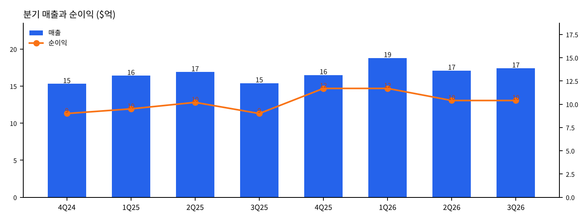
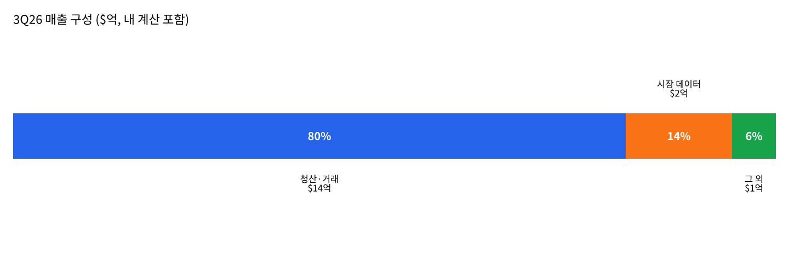
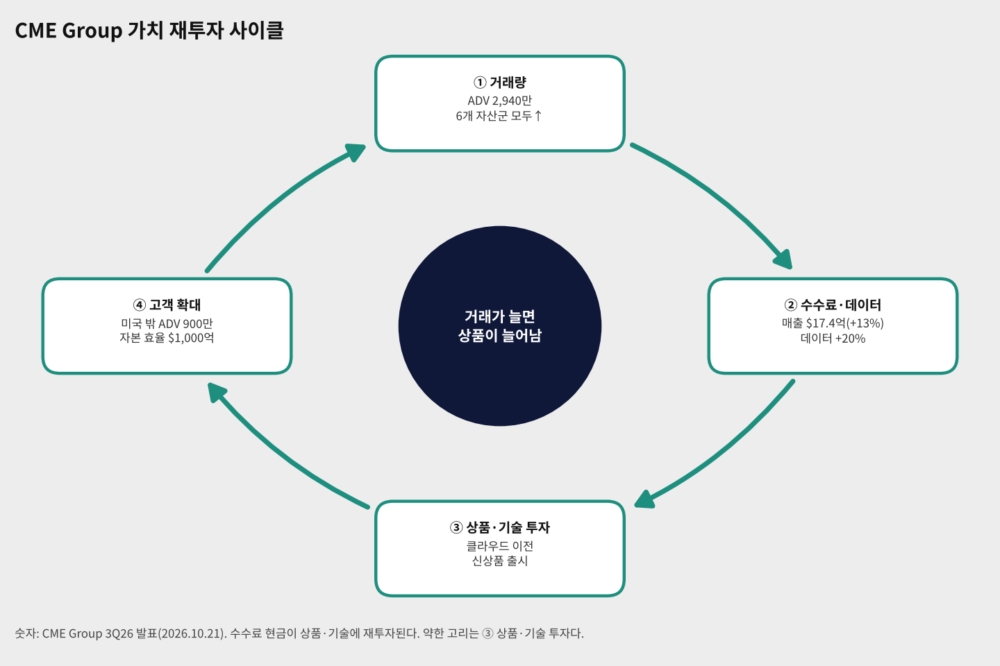

CME는 선물·옵션 거래와 청산 수수료를 받고, 시장 데이터를 판다. 거래가 많아질수록 수수료와 데이터 수요가 함께 늘어난다.
| 항목 | 내용 |
|---|---|
| 종목 | CME Group (CME) · NASDAQ · 거래소 · 일리노이 시카고 |
| 최근 분기(3Q26) | 매출 $17.4억, 조정 EPS $3.02 |
| 핵심 상품 | 금리·주가지수·에너지·금속·농산물·외환·암호화폐 선물 |
| 직원 수 | 약 3,875명(트레이딩뷰) |
| 멀티플 | PER·PEG·P/S는 08~10 항목 표 참조 |
| 직책 | 인물 | 역할·특징 |
|---|---|---|
| 회장·CEO | 테리 더피(Terry Duffy) | 클라우드 이전과 신상품을 추진 |
| CFO | (확인 필요) | 회사 공개 자료 기준 확인 필요 |
경영 스타일: 상품·고객 확장. 새 선물·옵션과 시장 데이터를 늘리고, 클라우드로 접근성을 넓힌다.
공동 입주(co-location)와 클라우드 관리형 서비스를 모두 제공한다.
금리·암호화폐 등 새 상품과 자본 효율성(교차 증거금)으로 고객을 늘린다.
다음 실적발표는 세 가지 질문에 답하는 자리다.
1. 거래량이 높은 수준을 유지하나?
2. 시장 데이터 매출이 계속 크나?
3. 규제·경쟁 변화가 오나?
한 줄 판정 규칙: 첫 질문(거래량)이 높은 수준을 유지하면 약한 고리인 ② 수수료율은 거래 증가로 상쇄된다고 본다.
일정: 4Q26 실적 발표는 2027.02.10 예정(트레이딩뷰). 월별 거래량은 매달 초 발표된다.
| 분기 | 매출 | 순이익 | EPS | 조정 EPS | 특이 사항 |
|---|---|---|---|---|---|
| 4Q24 | $15.3억 | $9.0억 | 2.40 | 2.52 | |
| 1Q25 | $16.4억 | $9.5억 | 2.62 | 2.80 | |
| 2Q25 | $16.9억 | $10.2억 | 2.81 | 2.96 | |
| 3Q25 | $15.4억 | $9.0억 | 2.49 | 2.68 | |
| 4Q25 | $16.5억 | $11.7억 | 3.24 | 2.77 | |
| 1Q26 | $18.8억 | $11.7억 | 3.18 | 3.36 | |
| 2Q26 | $17.1억 | $10.4억 | 2.88 | 2.99 | |
| 3Q26 | $17.4억 | $10.4억 | 2.89 | 3.02 | 3Q 일평균 거래량 사상 최고, 매출 3Q 최고 |
매출은 트레이딩뷰 스캐너의 분기 총매출이라 회사가 발표한 순매출과 다를 수 있다. 매출·순이익·EPS(GAAP 희석)는 트레이딩뷰 스캐너, 조정 EPS는 트레이딩뷰 실적 페이지의 Reported 값이다. 분기 정렬은 오래된 분기→최신이다.

흐름 요약: 최근 분기 매출은 $17.4억로 전년 동기 $15.4억 대비 +13.0%, 순이익은 $10.4억(전년 $9.0억)다. 최근 4분기 GAAP EPS는 $12.19, 조정 EPS는 $12.14다.
| 항목 | 내용 | 3Q26 금액 | 비고 |
|---|---|---|---|
| 청산·거래 수수료 | 계약당 평균 $0.679 | $14.0억 | 회사 발표 |
| 시장 데이터 | 가격·분석 데이터 | $2.43억 | +20% |
| 그 외(내 계산) | 접근·기타 | $1.0억 | 총 $17.4억에서 뺀 값 |

매출 약 80%가 청산·거래 수수료라 거래량이 곧 실적이다.
CME Group은 세계 시장이 위험을 관리하고 가격을 찾는 장소를 제공하는 것을 목표로 한다.
| 축 | 내용 |
|---|---|
| 거래 | ADV 2,940만 계약 |
| 데이터 | $2.43억(+20%) |
| 환원 | 분기 약 $10억 |

| 이동평균 | 값 | 종가 대비 | 위치 |
|---|---|---|---|
| 5일선 | $313.57 | -1.6% | 종가 아래 |
| 20일선 | $307.27 | +0.5% | 종가 위 |
| 50일선 | $288.84 | +6.9% | 종가 위 |
| 100일선 | $275.31 | +12.1% | 종가 위 |
| 200일선 | $281.98 | +9.5% | 종가 위 |
52주 고가 $329.16(2026-03-03)·저가 $218.31(2026-06-29) 범위에서 종가 $308.70는 20일선, 50일선, 100일선, 200일선을 웃돌고 5일선은 밑돈다.
| 규칙 | 기준 | 현재 값 | 신호 |
|---|---|---|---|
| 장기 추세 필터 | 종가 vs 200일선 | $308.70 > $281.98 | 매수 |
| 중장기 교차 | 50일선 vs 200일선 | $288.84 > $281.98 | 매수 |
| 단기 교차 | 20일선 vs 50일선 | $307.27 > $288.84 | 매수 |
| 돈키언 채널 | 55일 고가 $321.39 / 저가 $258.87 | 중간값 $290.13 위 | 매수 |
| 1개월 모멘텀 | 21거래일 수익률 | +4.4% (기준 $295.79) | 매수 |
| 3개월 모멘텀 | 63거래일 수익률 | +12.3% (기준 $274.98) | 매수 |
| 6개월 모멘텀 | 126거래일 수익률 | +6.7% (기준 $289.29) | 매수 |
| 12개월 모멘텀 | 252거래일 수익률 | +10.5% (기준 $279.28) | 매수 |
| 종합 (8개 평균) | +1.00 | 강한 매수 |
해석: 매수 신호 8개(장기 추세 필터, 중장기 교차, 단기 교차, 돈키언 채널, 1개월 모멘텀, 3개월 모멘텀, 6개월 모멘텀, 12개월 모멘텀), 매도 신호 0개(없음). CTA 점수 +1.00(강한 매수). 14일 ATR $6.45 (2.1%), 52주 고가 $329.16 · 저가 $218.31.
| 가격 | 기준 | 무엇이 바뀌나 |
|---|---|---|
| $321.39 | 55일 고가 | 돌파 시 채널 상단 갱신 |
| $295.79 | 1개월 모멘텀 기준가 | 종가가 이 가격 위면 1개월 신호 매수 |
| $290.13 | 돈키언 중간값 | 55일 채널 중간값 위/아래로 신호가 바뀜 |
| $289.29 | 6개월 모멘텀 기준가 | 종가가 이 가격 위면 6개월 신호 매수 |
| $281.98 | 200일선 | 종가가 이 선 위/아래인지로 장기 추세 신호가 바뀜 |
| $279.28 | 12개월 모멘텀 기준가 | 종가가 이 가격 위면 12개월 신호 매수 |
| $274.98 | 3개월 모멘텀 기준가 | 종가가 이 가격 위면 3개월 신호 매수 |
| $258.87 | 55일 저가 | 이탈 시 채널 하단 갱신 |
가격 수준은 신호가 바뀌는 기준선일 뿐 진입·청산 가격 제안이 아니다. 20일/50일 교차는 이동평균 자체가 움직여 단일 가격으로 표시하지 않았다. 일봉·주봉은 종가 기준 직접 계산(고저 데이터 미사용)이다.
| 악재 요인 | 내용 | 강도 |
|---|---|---|
| 거래량 의존 | 변동성이 낮아지면 거래량 감소 | 중간 |
| 경쟁 | 신규 진입·통합 경쟁 | 중간 |
| 세제·규제 | 옵션 세제 등 정책 변화 | 참고 |
| 티커 | 회사 | PER(TTM) | PEG | P/S | EPS 성장(YoY) |
|---|---|---|---|---|---|
| CME | CME Group | 25.4배 | 2.36 | 15.83배 | +11% |
| ICE | Intercontinental Exchange | 23.5배 | 0.70 | 7.18배 | +33% |
| NDAQ | Nasdaq | 28.8배 | 0.95 | 6.51배 | +30% |
| SPGI | S&P Global | 26.6배 | 1.21 | 8.29배 | +22% |
| MCO | Moody's | 29.3배 | 0.92 | 10.27배 | +32% |
비교 결론: CME Group의 PER 25.4배는 Intercontinental Exchange보다 높고 Nasdaq·S&P Global·Moody's보다 낮다. PEG 2.36는 네 곳 모두보다 높다.
현금·부채는 트레이딩뷰 스캐너 값이다. 현금이 많고 부채가 낮다.
| 지표 | 값 | 출처 | 해석 |
|---|---|---|---|
| 현금·단기투자 | $23억 | 트레이딩뷰 스캐너(최근 분기) | |
| 총부채 | $39억 | 트레이딩뷰 스캐너(최근 분기) | |
| 순부채(부채−현금) | $16억 | 내 계산 | 현금 대비 부채 부담 |
| 잉여현금흐름(TTM) | $43억 | 트레이딩뷰 스캐너 | |
| TTM 매출 | $70억 | 트레이딩뷰 스캐너 |
| 기준 | 매출 | P/S | 비고 |
|---|---|---|---|
| 내 계산(종가 ÷ 최근 4분기 매출 합계) | $69.8억 | 15.83배 | 시총은 정렬용 데이터에서만 사용 |
| 동종(트레이딩뷰) | – | ICE 7.18배 · NDAQ 6.51배 · SPGI 8.29배 · MCO 10.27배 | 11.19 |
해석: 영업이익 대비 부채가 낮고 배당·자사주로 현금을 환원한다(내 해석).
EBITDA는 영업활동의 현금 창출력을 보는 지표이고, PEG는 PER을 EPS 성장률로 나눈 값이다. EBITDA·FCF는 트레이딩뷰 TTM 값이다.
| 지표 | 값 | 산출 |
|---|---|---|
| EBITDA(TTM) | $49억 | 트레이딩뷰 스캐너 |
| EBITDA 마진 | 70.0% | EBITDA ÷ TTM 매출(내 계산) |
| FCF 마진 | 61.4% | FCF ÷ TTM 매출(내 계산) |
| PER(GAAP TTM) | 25.3배 | $308.70 ÷ $12.19 |
| PER(조정 TTM) | 25.4배 | $308.70 ÷ $12.14 |
| 방식 | PER | EPS 성장률 | PEG | 판정 |
|---|---|---|---|---|
| 조정 EPS (TTM $12.14) | 25.4배 | +11% ($10.96 → $12.14) | 2.36 | 기준 초과 |
| GAAP EPS (TTM $12.19) | 25.3배 | +18% ($10.32 → $12.19) | 1.40 | 기준 초과 |
판정: 조정 EPS 기준 PEG 2.36 → 1.0 초과 PEG 기준은 1.0 이하 투자 적격, 0.5 이하 적극 매수다. EPS 성장률은 최근 4분기 EPS 합계를 직전 4분기 합계와 비교한 값(내 계산)이고, 일회성 항목이 있으면 조정 EPS 행을 함께 본다.

CME Group의 사이클: 수수료 현금이 상품·기술에 재투자돼 고객과 자본 효율성을 늘리고, 그 고객이 다시 거래량을 키우는 순환이다.
| 고리 | 현재 숫자·근거 |
|---|---|
| ① 거래량 | 3Q26 ADV 2,940만(3Q 기록) · 6개 자산군 모두 두 자릿수 증가 |
| ② 수수료·데이터 | 매출 $17.4억(+13%) · 시장 데이터 $2.43억(+20%) |
| ③ 상품·기술 투자 | 클라우드 이전 · 신상품 출시(투자 금액은 보고서에 없음) |
| ④ 고객 확대 | 미국 밖 ADV 900만(3Q 기록) · 일평균 자본 효율성 $1,000억 |
사이클의 특징: 약한 고리는 ③ 상품·기술 투자다(투자 금액이 보고서에 없다). "(내 해석)"은 보고서 수치가 아닌 해석이다.